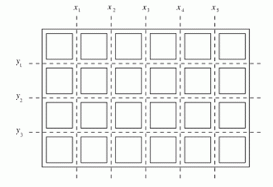

有一块n*m的矩形巧克力，准备将它切成n*m块。巧克力上共有n-1条横线和m-1条竖线，你每次可以沿着其中的一条横线或竖线将巧克力切开，无论切割的长短，沿着每条横线切一次的代价依次为y1，y2，…，yn-1，而沿竖线切割的代价依次为x1，x2，…，xm-1。例如，对于下图6*4的巧克力，

我们先沿着三条横线切割，需要3刀，得到4条巧克力，然后再将这4条巧克力沿竖线切割，每条都需要5刀，则最终所花费的代价为y1+y2+y3+4*(x1+x2+x3+x4+x5)。
当然，上述简单切法不见得是最优切法，那么怎样切割该块巧克力，花费的代价最少呢？